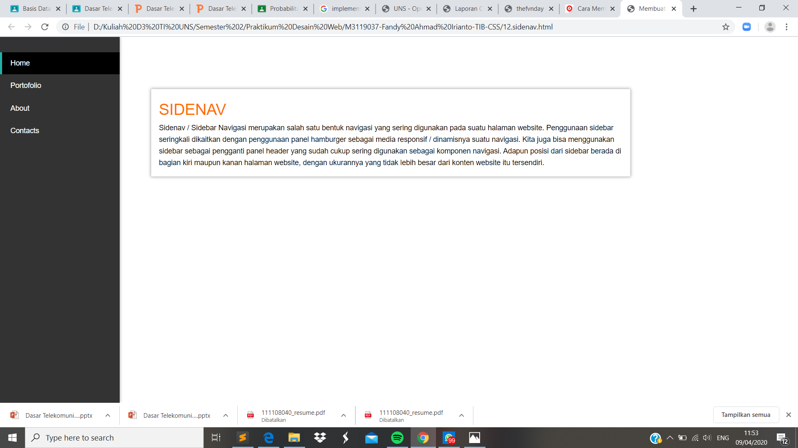

Sidebar Navigasi
Pendahuluan
Sidenav / Sidebar Navigasi merupakan salah satu bentuk navigasi yang sering digunakan
pada suatu halaman website.Penggunaan sidebar seringkali dikaitkan dengan penggunaan
panel hamburger sebagai media responsif / dinamisnya suatu navigasi. Kita juga bisa
menggunakan sidebar sebagai pengganti panel header yang sudah cukup sering digunakan
sebagai komponen navigasi. Adapun posisi dari sidebar berada di bagian kiri maupun
kanan halaman website, dengan ukurannya yang tidak lebih besar dari konten website itu
tersendiri.
Codingan
<!DOCTYPE html>
<html lang="id">
<head>
<meta charset="utf-8">
<meta name="viewport" content="width=device-width, initial-scale=1.0">
<title>Membuat Nav</title>
<link rel="stylesheet" type="text/css" href="nav-style.css">
<link rel="stylesheet" type="text/css" href="side-nav-style.css">
<link rel="stylesheet" type="text/css" href="shadow-style.css">
</head>
<body>
<aside class="side-nav">
<div class="title">
<a href="#"OneNav></a>
</div>
<ul>
<li><a href="#" class="active">Home</a></li>
<li><a href="#">Portofolio</a></li>
<li><a href="#">About</a></li>
<li><a href="#">Contacts</a></li>
</ul>
</div>
</aside>
<div class="card">
<div class="card-content">
<h2 class="card-title">SIDENAV</h2>
<p>
Sidenav / Sidebar Navigasi merupakan salah satu bentuk navigasi yang sering digunakan
pada suatu halaman website.Penggunaan sidebar seringkali dikaitkan dengan penggunaan
panel hamburger sebagai media responsif / dinamisnya suatu navigasi. Kita juga bisa
menggunakan sidebar sebagai pengganti panel header yang sudah cukup sering digunakan
sebagai komponen navigasi. Adapun posisi dari sidebar berada di bagian kiri maupun
kanan halaman website, dengan ukurannya yang tidak lebih besar dari konten website itu
tersendiri.
</p>
</div>
</div>
</body>
</html>
Kode CSS Eksternal
<h2>side-nav-style.css</h2>
*{
margin: 0;
padding: 0;
font-family: 'Roboto', sans-serif;
}
.side-nav{
width: 230px;
height: 100%;
background-color: #333333;
float: left;
overflow: hidden;
position: fixed;
top: 0;
left: 0;
box-shadow: 0 0 6px #999999;
}
.side-nav .title{
width: 100%;
float: left;
font-size: 28px;
padding: 14px;
}
.side-nav .title a{
text-decoration: : none;
color: #20b2aa;
}
.side-nav ul{
float: left;
}
.side-nav ul li{
display: blok;
padding: 13px 210px 12px 0px;
}
.side-nav li a{
text-decoration: none;
color: #FFFFFF;
border-left:solid 4px transparent;
padding: 13px 210px 13px 16px;
font-size: 14px;
}
.side-nav li a:hover{
background: rgba(0,0,0,1);
}
.side-nav li a.active{
border-left: solid 4px #20b2aa;
background: rgba(0,0,0,2);
}
<h2>nav-style.css</h2>
*{
margin: 0;
padding: 0;
font-family: 'Roboto', sans-serif;
}
.nav{
width: 100%;
background-color: #20b2aa;
float: left;
overflow: hidden;
position: fixed;
top: 0;
left: 0;
box-shadow: 0 0 6px #999999;
}
.nav title{
float: left;
font-size: 28px;
padding: 10px 16px;
}
.nav .title a{
text-decoration: : none;
color: #FFFFFF;
}
.nav ul{
float: right;
}
.nav ul li{
display: blok;
float: left;
padding: 18px 0px;
}
.nav li a{
text-decoration: none;
color: #FFFFFF;
padding: 20px 16px;
font-size: 14px;
}
.nav li a:hover{
background: rgba(0,0,0,1);
}
.nav li a.active{
background: rgba(0,0,0,2);
}
<h2> shadow-style</h2>
*{
margin: 0;
padding: 0;
font-family: 'Roboto', sans-serif;
}
h1{
padding:30px 50px 10px 600px;
}
.card{
width: 60%;
height:auto;
margin: 100px 30px 40px 290px;
background-color: #FFFFFF;
border: solid thin #DDDDDD;
box-shadow: 0 0 6px #999999;
float: left;
}
.card .card-title{
font-size: 30px;
font-weight: normal;
color: #FF6D00;
}
.card .card-content{
padding: 15px;
font-size: 14px;
line-height: 1.6;
}
Hasil Screenshot

Analisis
Pada percobaan membuat sidenav kali ini jika sesaui modul akan mendapatkan hasil seperti gambar diatas. Posisi sidenav berada di sebelah kiri dengan tombol navigasi vertika kebawah. Untuk membuat sidenav tersebut kita perlu memanggil nav-style.css yang telah sebelumnya kita buat serta disis saya menambahkan shadow-style.css untuk mengisi ruang angar terlihat tidak begitu kosong..